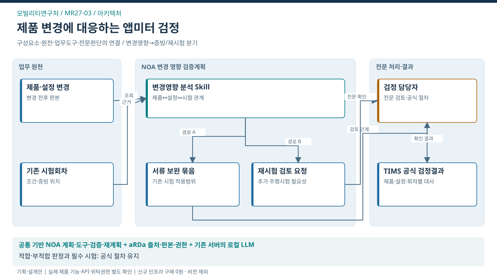

모빌리티연구처 / ARCHITECTURE
제품 변경에 대응하는 앱미터 검증계획
필수 검정의 신뢰성 유지와 제품 변경에 따른 반복 보완 감소

업무·기존 기반
TIMS 앱미터 검정
CCK 적용 구조
NOA 기반 과업 수행 · aRDa 조직지식
로컬 LLM · 검증된 규칙·도구 연계
적용 전제
기존 서버 활용 · 신규 인프라 구매 0원
제품버전·데이터 권한·연계 API 검증
이 서비스의 법정업무 기반
모빌리티연구처와 연결된 업무
법적 수행범위에서 출발하는 AX 제안
연결은 소관·예산권의 확정과 구분
- 교통문화지수·체험교육·안전관리자 시험 ↗법정 위탁
- 택시미터·앱미터 검정 ↗검정기관 지정에 따른 수행
- 대여 운전자격·운송플랫폼 검토 ↗법정 위탁
- 택시운행정보관리(TIMS) ↗법정 위탁
- 교통약자 이동편의 실태조사 ↗법정 조사에 대한 수행 확인
문제 근거와 기대편익
업무 근거: TS 공개업무 안내
해결할 문제 가설: 제품 버전·설정·시험회차가 어긋나면 제출자료가 많아도 변경 영향에 대한 입증이 완성되지 않을 수 있음. 실제 빈도는 기준선 조사 대상임
수혜자: 택시 이용자·앱미터 제작기업
기대효과: 기관 — 변경된 제품의 검증 누락 완화 / 기업 — 준비 부족에 따른 반복 보완 감소 / 국민 — 검정 신뢰성에 기반한 택시 이용
확인 지표: 반복 보완 사건 비율 / 중요 검증항목 누락률 / 전체 처리기간
기준값·목표 개선율: 현업 실증으로 확정
전문가 역할·제외범위·검증조건
전문 판단·실행: 검정 담당자의 기술해석·추가시험·공식 검정 판단
이번 과업 제외: AI 적합·부적합 확정, 확인서 발급 권한 대체, 필수 주행시험 생략
선행 확인: 검정종류별 유효 기준, 제품 변경사례, TIMS 시험연계 또는 승인된 내보내기 자료
제품 역할은 적용안. TS 설치·성능·현업 효과의 검증 완료와 구분.